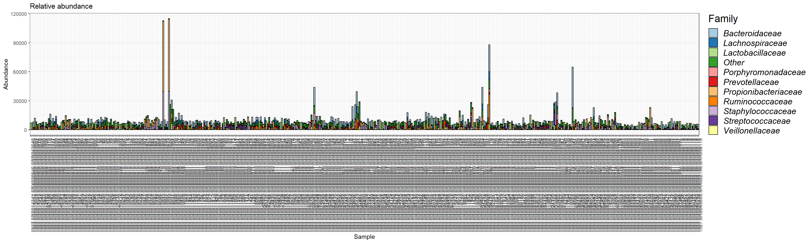
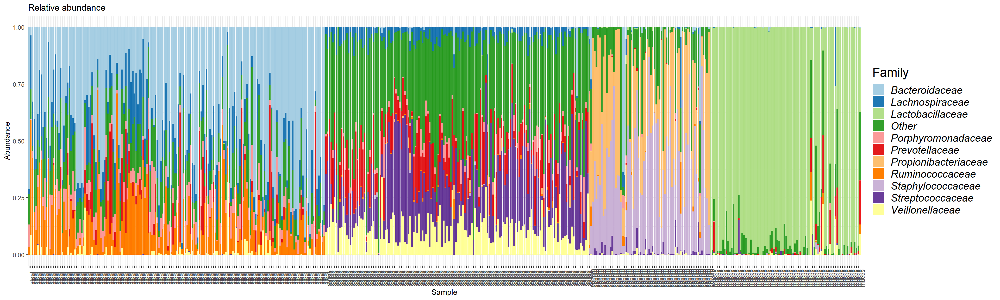
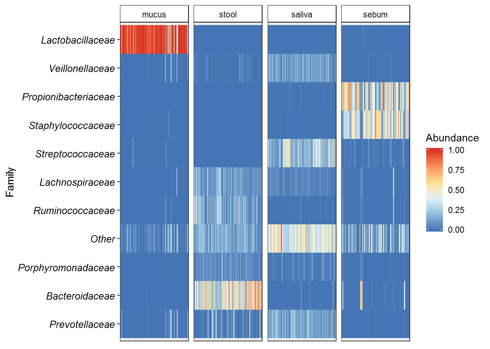
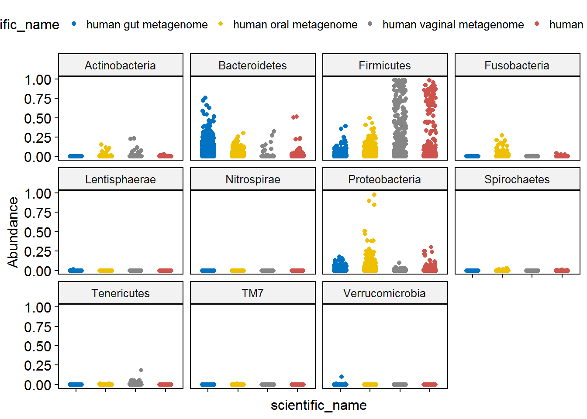

4 Composition plots
Barplots are an easy and intuitive way of visualising the composition of your samples. However, the way this is implented in phyloseq causes problems with the order of the taxa in the legend at higher taxonomic levels.
We will use the filtered phyloseq object from Set-up and Pre-processing section.
Load packages
library(microbiome) # data analysis and visualisation
library(phyloseq) # also the basis of data object. Data analysis and visualisation
library(RColorBrewer) # nice color options
library(ggpubr) # publication quality figures, based on ggplot2
library(dplyr) # data handling ps1 <- readRDS("./phyobjects/ps1.rds")
# use print option to see the data saved as phyloseq object.
print(ps1)## phyloseq-class experiment-level object
## otu_table() OTU Table: [ 3690 taxa and 474 samples ]
## sample_data() Sample Data: [ 474 samples by 31 sample variables ]
## tax_table() Taxonomy Table: [ 3690 taxa by 7 taxonomic ranks ]
## phy_tree() Phylogenetic Tree: [ 3690 tips and 3689 internal nodes ]4.1 Barplot counts
ps1.com <- ps1
# We need to set Palette
taxic <- as.data.frame(ps1.com@tax_table) # this will help in setting large color options
#colourCount = length(unique(taxic$Family)) #define number of variable colors based on number of Family (change the level accordingly to phylum/class/order)
#getPalette = colorRampPalette(brewer.pal(12, "Paired")) # change the palette as well as the number of colors will change according to palette.
taxic$OTU <- rownames(taxic) # Add the OTU ids from OTU table into the taxa table at the end.
colnames(taxic) # You can see that we now have extra taxonomy levels.## [1] "Kingdom" "Phylum" "Class" "Order" "Family" "Genus" "Species"
## [8] "OTU"taxmat <- as.matrix(taxic) # convert it into a matrix.
new.tax <- tax_table(taxmat) # convert into phyloseq compatible file.
tax_table(ps1.com) <- new.tax # incroporate into phyloseq Object
# now edit the unclassified taxa
# tax_table(ps1.com)[tax_table(ps1.com)[, "Family"] == "f__", "Family"] <- "Unclassified family"
# We will also remove the 'f__' patterns for cleaner labels
# tax_table(ps1.com)[, colnames(tax_table(ps1.com))] <- gsub(tax_table(ps1.com)[,
# colnames(tax_table(ps1.com))], pattern = "[a-z]__", replacement = "")
# it would be nice to have the Taxonomic names in italics.
# for that we set this
guide_italics <- guides(fill = guide_legend(label.theme = element_text(size = 15,
face = "italic", colour = "Black", angle = 0)))
## Now we need to plot at family level, We can do it as follows:
# first remove the phy_tree
ps1.com@phy_tree <- NULL
# Second merge at family level
ps1.com.fam <- aggregate_taxa(ps1.com, "Family", top = 10)
plot.composition.COuntAbun <- plot_composition(ps1.com.fam) + theme(legend.position = "bottom") +
scale_fill_brewer("Family", palette = "Paired") + theme_bw() +
theme(axis.text.x = element_text(angle = 90)) +
ggtitle("Relative abundance") + guide_italics + theme(legend.title = element_text(size=18))
plot.composition.COuntAbun
#ggsave("./Test_Outputfiles/Family_barplot_CountAbundance.pdf", height = 6, width = 8)This plot is based on the reads/sample. You can see the reads are not evenly distributed over the samples, nevertheless their overall composition seems to be the same. The only thing that is different is the scaling. You don’t need any other normalisation alogorithms. To check this in the next step we plot the relative abundance.
4.2 Barplot relative abundance
Make it relative abundance
# the previous pseq object ps1.com.fam is only counts.
# Use traqnsform function of microbiome to convert it to rel abun.
ps1.com.rel <- microbiome::transform(ps1.com, "compositional")
ps1.com.fam2 <- aggregate_taxa(ps1.com.rel, "Family", top = 10)
plot.composition.relAbun <- plot_composition(ps1.com.fam2,
sample.sort = "scientific_name",
x.label = "env_material") + theme(legend.position = "bottom") + scale_fill_brewer("Family", palette = "Paired") + theme_bw() +
theme(axis.text.x = element_text(angle = 90)) +
ggtitle("Relative abundance") + guide_italics + theme(legend.title = element_text(size=18))
plot.composition.relAbun
#ggsave("./figures/Family_barplot_RelAbundance.pdf", height = 6, width = 8)4.2.1 Barplot customize
data.com <- plot.composition.relAbun$data
colnames(data.com)## [1] "OTU" "Sample" "Abundance" "xlabel"p.com <- ggplot(data.com, aes(x = Sample, y = Abundance, fill = OTU))
p.com <- p.com + geom_bar(position = "stack", stat = "identity")
p.com <- p.com + scale_x_discrete(labels = data.com$xlabel, breaks = data.com$Sample)
p.com <- p.com + facet_grid(~xlabel, scales = "free") + theme_bw()
p.com <- p.com + scale_fill_brewer("Family", palette = "Paired")
p.com <- p.com + rremove("x.text")
ggsave("./figures/Composition plots.pdf", height = 4, width = 6)for more information Microbiome tutorial
4.3 Heatmaps
# base plot
p.heat <- ggplot(data.com, aes(x = Sample, y = OTU)) + geom_tile(aes(fill = Abundance))
# Change color
p.heat <- p.heat + scale_fill_distiller("Abundance", palette = "RdYlBu") + theme_bw()
# Make bacterial names italics
p.heat <- p.heat + theme(axis.text.y = element_text(colour = 'black',
size = 10,
face = 'italic'))
# Make seperate samples based on main varaible
p.heat <- p.heat + facet_grid(~xlabel,
scales = "free") + rremove("x.text")
p.heat <- p.heat + ylab("Family")
#Clean the x-axis
p.heat <- p.heat + theme(axis.title.x=element_blank(),
axis.text.x=element_blank(),
axis.ticks.x=element_blank())
# Clean the facet label box
p.heat <- p.heat + theme(legend.key = element_blank(),
strip.background = element_rect(colour="black", fill="white"))
print(p.heat)
ggsave("./figures/Heatmap.pdf", height = 4, width = 6)
# + geom_text(aes(label = round(Abundance)), size = 0.4)Extra
Following is an example of customizing the plot using ggpubr.
ps_df <- microbiomeutilities::phy_to_ldf(ps1.com, transform.counts = "compositional")## An additonal column Sam_rep with sample names is created for reference purposecolnames(ps_df)## [1] "OTUID" "Kingdom"
## [3] "Phylum" "Class"
## [5] "Order" "Family"
## [7] "Genus" "Species"
## [9] "OTU" "Sam_rep"
## [11] "Abundance" "X.SampleID"
## [13] "BarcodeSequence" "LinkerPrimerSequence"
## [15] "run_prefix" "body_habitat"
## [17] "body_product" "body_site"
## [19] "bodysite" "dna_extracted"
## [21] "elevation" "env"
## [23] "env_biome" "env_feature"
## [25] "env_material" "env_package"
## [27] "geo_loc_name" "host_common_name"
## [29] "host_scientific_name" "host_subject_id"
## [31] "host_taxid" "latitude"
## [33] "longitude" "physical_specimen_location"
## [35] "physical_specimen_remaining" "psn"
## [37] "public" "sample_type"
## [39] "scientific_name" "sequencecenter"
## [41] "title" "Description"# this data.frame can be used to customize several plots.
# example boxplot at phylum level
p.box <- ggstripchart(ps_df, "scientific_name", "Abundance",
facet.by = "Phylum", color = "scientific_name",
palette = "jco")
p.box + rremove("x.text")
sessionInfo()## R version 3.4.4 (2018-03-15)
## Platform: x86_64-w64-mingw32/x64 (64-bit)
## Running under: Windows 7 x64 (build 7601) Service Pack 1
##
## Matrix products: default
##
## locale:
## [1] LC_COLLATE=Dutch_Netherlands.1252 LC_CTYPE=Dutch_Netherlands.1252
## [3] LC_MONETARY=Dutch_Netherlands.1252 LC_NUMERIC=C
## [5] LC_TIME=Dutch_Netherlands.1252
##
## attached base packages:
## [1] methods stats graphics grDevices utils datasets base
##
## other attached packages:
## [1] bindrcpp_0.2.2 dplyr_0.7.4 ggpubr_0.1.6
## [4] magrittr_1.5 RColorBrewer_1.1-2 microbiome_1.0.2
## [7] ggplot2_2.2.1 phyloseq_1.23.1
##
## loaded via a namespace (and not attached):
## [1] ggrepel_0.7.0 Rcpp_0.12.16
## [3] ape_5.1 lattice_0.20-35
## [5] tidyr_0.8.0 Biostrings_2.46.0
## [7] assertthat_0.2.0 rprojroot_1.3-2
## [9] digest_0.6.15 foreach_1.4.4
## [11] R6_2.2.2 plyr_1.8.4
## [13] backports_1.1.2 stats4_3.4.4
## [15] evaluate_0.10.1 pillar_1.2.2
## [17] zlibbioc_1.24.0 rlang_0.2.0
## [19] lazyeval_0.2.1 data.table_1.10.4-3
## [21] vegan_2.5-1 S4Vectors_0.16.0
## [23] Matrix_1.2-14 rmarkdown_1.9
## [25] labeling_0.3 splines_3.4.4
## [27] stringr_1.3.0 igraph_1.2.1
## [29] pheatmap_1.0.8 munsell_0.4.3
## [31] compiler_3.4.4 xfun_0.1
## [33] pkgconfig_2.0.1 BiocGenerics_0.24.0
## [35] multtest_2.34.0 mgcv_1.8-23
## [37] htmltools_0.3.6 tidyselect_0.2.4
## [39] biomformat_1.7.0 tibble_1.4.2
## [41] gridExtra_2.3 bookdown_0.7
## [43] IRanges_2.12.0 codetools_0.2-15
## [45] permute_0.9-4 viridisLite_0.3.0
## [47] MASS_7.3-49 grid_3.4.4
## [49] nlme_3.1-137 jsonlite_1.5
## [51] gtable_0.2.0 scales_0.5.0
## [53] stringi_1.1.7 XVector_0.18.0
## [55] reshape2_1.4.3 viridis_0.5.1
## [57] ggsci_2.8 iterators_1.0.9
## [59] tools_3.4.4 microbiomeutilities_0.99.0
## [61] ade4_1.7-11 Biobase_2.38.0
## [63] glue_1.2.0 purrr_0.2.4
## [65] parallel_3.4.4 survival_2.42-3
## [67] yaml_2.1.18 colorspace_1.3-2
## [69] rhdf5_2.22.0 cluster_2.0.7-1
## [71] knitr_1.20 bindr_0.1.1